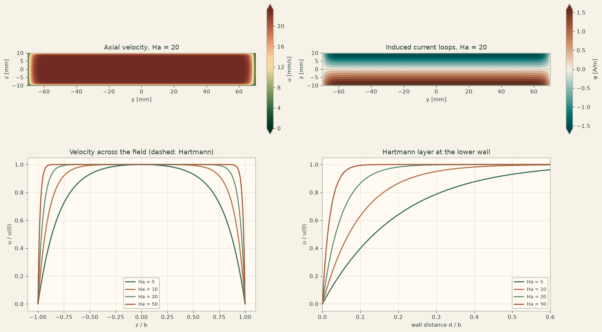
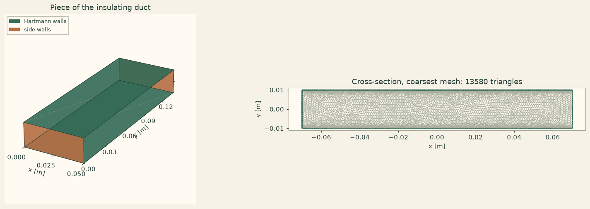

Docs › Examples › Hartmann layers in a liquid-metal duct
Magnetohydrodynamics · 2D
Hartmann layers in a liquid-metal duct
Fully developed flow of a liquid metal through an insulating rectangular duct across a magnetic field, with the thin Hartmann layers on the walls normal to the field.
Run locally with OneSimulation. The example downloads are free. Running them requires an activated runtime. Runtime Alpha 0.2.1a7 · CPython 3.13 on macOS (Apple Silicon), Ubuntu 22.04 (x86-64), and Windows x64. Installation and activation · View pilot plans. Scope of the reference checks.

What it computes
OneSimulation cuts the 2D cross-section from the duct read from STEP and solves the coupled equations for the axial velocity and the induced-current streamfunction with finite elements on triangles refined towards the Hartmann walls, for four Hartmann numbers from 5 to 50. Velocity profile, current loops, layer thickness and the power balance come from the same solve. The script that builds the STEP file comes with the notebook.
What it checks
The centre velocities match Hartmann's solution within 0.05 %, the velocity profile across both layers within 0.05 % (Ha = 5) to 0.60 % (Ha = 50) of the centre value, the measured layer thickness within 1 % of b/Ha (0.202 against 0.200 mm at Ha = 50), viscous plus Joule dissipation equal the pumping power to 1e-15, and the Ha = 20 profile error falls from 2.2 % to 0.29 % over three meshes.
Geometry
The notebook starts at the import of the CAD file hartmann_layer_duct_section.step: STEP (AP242), readable by any CAD program, with the names of the faces that the boundary conditions use. Put it next to the notebook.

The geometry script
The script hartmann_layer_duct_section_geometry.py builds the geometry with the CAD objects of OneSimulation and writes the file. Change a dimension there, run it, and run the notebook again.
"""Geometry of the OneSimulation example "Hartmann layers in a liquid-metal duct".
Builds a 50 mm long piece of an insulating rectangular duct with a 140 mm x 20 mm flow cross-section
with the CAD objects of OneSimulation and writes hartmann_layer_duct_section.step. The faces keep their
names: z_min and z_max are the wide walls normal to the magnetic field (Hartmann walls), y_min and y_max
the narrow side walls, x_min and x_max inlet and outlet.
"""
from onesim.cad.d3 import Box
duct = Box(length=0.050, width=0.140, height=0.020)
duct.save("hartmann_layer_duct_section.step")The notebook
The complete notebook, cell by cell. Run it to produce the figures and the comparison printout.
An electrically conducting liquid driven by a pressure gradient \(G=-\partial p/\partial x\) through a duct is braked by a transverse magnetic field \(B\): the motion induces currents, and the Lorentz force of these currents flattens the velocity profile. The velocity drops to zero in thin Hartmann layers on the walls normal to the field, whose thickness shrinks as the field grows.
Far from inlet and outlet the flow is fully developed and depends only on the cross-section coordinates \((y,z)\); \(\mathbf B=B\hat{\mathbf z}\). For a liquid metal the magnetic Reynolds number is tiny, so the field is not disturbed by the flow (inductionless approximation). The axial velocity \(u\) and the streamfunction \(\psi\) of the induced current (\(j_y=\partial_z\psi\), \(j_z=-\partial_y\psi\)) then satisfy
The cross-section is cut from the duct in the CAD file hartmann_layer_duct_section.step, written by hartmann_layer_duct_section_geometry.py with the CAD objects of OneSimulation:
| wall | condition | |---|---| | Hartmann walls z_min, z_max (\(z=\pm b\), normal to \(\mathbf B\)) | no slip \(u=0\), electrically insulating \(\psi=0\) | | side walls y_min, y_max (\(y=\pm a\), parallel to \(\mathbf B\)) | no slip \(u=0\), electrically insulating \(\psi=0\) |
The fluid is the eutectic gallium-indium-tin alloy (\(\mu=2.16\) mPa s, \(\sigma=3.3\) MS/m). The duct is seven times wider than high (\(a=70\) mm, \(b=10\) mm), so its middle behaves like the flow between two infinite plates.
Reference (J. Hartmann, Hg-Dynamics I, Kgl. Danske Vidensk. Selsk. Mat.-fys. Medd. 15(6), 1937; U. Müller and L. Bühler, Magnetofluiddynamics in Channels and Containers, Springer 2001, §3.2). With the Hartmann number \(\mathrm{Ha}=Bb\sqrt{\sigma/\mu}\) the velocity between two insulating plates is
a flat core and two wall layers of thickness \(\delta_\mathrm{Ha}\) in which the velocity rises as \(1-e^{-d/\delta_\mathrm{Ha}}\) with the wall distance \(d\). The power balance requires that the work of the pressure gradient, \(GQ\), equals the viscous plus the Joule dissipation.
import numpy as np
from onesim.cad.exchange import load
from onesim.meshing import TriangularMesher
from onesim.numerics.fem import FiniteElement, Lagrange, PlanarDirichletFiniteElement
from onesim.numerics.linear import SparseDirect
from onesim.physics.magnetohydrodynamics import InductionlessDuct
from onesim.visualization import plots, theme
theme.set()Geometry and mesh
section cuts the duct normal to the flow direction; the sides of the cross-section keep the names of the duct walls. The triangles are refined along the Hartmann walls to a quarter of the thinnest layer considered and grow slowly towards the core; the figure shows the coarsest mesh of the mesh study below, whose wall size is a quarter of the layer at \(\mathrm{Ha}=20\) (sizes in m).
duct = load("hartmann_layer_duct_section.step")
section = duct.section((1, 0, 0), origin=(0.025, 0.07, 0.01))
walls = section.boundaries
width, height = section.size[:2]
a, b = width / 2, height / 2
hartmann_numbers = (5, 10, 20, 50)
mesh_for = lambda size: TriangularMesher(
target_size=4 * size, grading=0.2, local_sizes={"z_min": size, "z_max": size}
).generate(section)
mesh = mesh_for(b / max(hartmann_numbers) / 4)
coarse = mesh_for(b / 20 / 2)
fig = plots.figure(1, 2, size=(14, 4.5))
plots.geometry(
duct,
selection={
"Hartmann walls": duct.boundaries.z_min | duct.boundaries.z_max,
"side walls": duct.boundaries.y_min | duct.boundaries.y_max,
},
labels=False,
camera=plots.Camera(elevation=25, azimuth=-60),
title="Piece of the insulating duct",
ax=fig[0],
)
plots.mesh(
coarse,
groups=("all",),
legend=False,
title=f"Cross-section, coarsest mesh: {len(coarse.cells)} triangles",
ax=fig[1],
)
plots.show()Model
InductionlessDuct solves both equations with linear finite elements on the section; the walls carry the homogeneous conditions of no slip and insulation. One solve per Hartmann number, all with the same pressure gradient of 10 Pa/m.
viscosity, conductivity, pressure_gradient = 2.16e-3, 3.3e6, 10.0
finite_element = FiniteElement(element=Lagrange(order=1))
spatial = PlanarDirichletFiniteElement(
finite_element=finite_element, boundary=walls.all
)
field_for = lambda hartmann: hartmann / b * np.sqrt(viscosity / conductivity)
models = {
Ha: InductionlessDuct(
viscosity=viscosity,
conductivity=conductivity,
magnetic_field=field_for(Ha),
pressure_gradient=pressure_gradient,
)
for Ha in hartmann_numbers
}
print(
f"solution mesh: {len(mesh.cells)} triangles, smallest size {1e3 * b / max(hartmann_numbers) / 4:.3f} mm at the Hartmann walls"
)
solutions = {
Ha: model.solve(mesh=mesh, spatial=spatial, linear_solver=SparseDirect().bind())
for Ha, model in models.items()
}Comparison with Hartmann's solution
The velocity is evaluated on the vertical line through the middle of the duct, across both Hartmann layers. The layer thickness is read off as the wall distance at which the velocity reaches \(1-1/e\) of its centre value.
nodes = solutions[20].velocity_coordinates
centre = (nodes.min(axis=0) + nodes.max(axis=0)) / 2
z = b * np.concatenate(
(
-np.cos(np.linspace(0, np.pi / 2, 300)),
np.sin(np.linspace(0, np.pi / 2, 300))[1:],
)
)
line = np.column_stack((np.full_like(z, centre[0]), centre[1] + z))
hartmann = (
lambda Ha, z: pressure_gradient
* b**2
/ (viscosity * Ha)
* (np.cosh(Ha) - np.cosh(Ha * z / b))
/ np.sinh(Ha)
)
profiles = {
Ha: finite_element.bind_space(mesh).evaluate(solution.velocity, line)
for Ha, solution in solutions.items()
}
thickness = lambda u: np.interp(
(1 - 1 / np.e) * u[len(z) // 2], u[: len(z) // 2 + 1], z[: len(z) // 2 + 1] + b
)
print(
"Ha B [mT] centre velocity [mm/s] profile error layer thickness [mm] power balance"
)
print(
" computed Hartmann (of centre) computed Hartmann b/Ha (P_visc+P_Joule)/GQ - 1"
)
for Ha, u in profiles.items():
exact = hartmann(Ha, z)
solution = solutions[Ha]
balance = (solution.viscous_power + solution.joule_power) / (
pressure_gradient * solution.flow_rate
) - 1
print(
f"{Ha:3d} {1e3 * field_for(Ha):8.1f} {1e3 * u[len(z) // 2]:10.3f} {1e3 * exact[len(z) // 2]:10.3f} {100 * np.abs(u - exact).max() / exact.max():14.2f} %"
f" {1e3 * thickness(u):11.3f} {1e3 * thickness(exact):9.3f} {1e3 * b / Ha:7.3f} {balance:16.1e}"
)A mesh study at \(\mathrm{Ha}=20\): the target size along the Hartmann walls is halved twice.
sizes = [b / 20 / 2, b / 20 / 4, b / 20 / 8]
study_profiles = [
finite_element.bind_space(m).evaluate(
models[20]
.solve(mesh=m, spatial=spatial, linear_solver=SparseDirect().bind())
.velocity,
line,
)
for m in map(mesh_for, sizes)
]
study_errors = [
np.abs(u - hartmann(20, z)).max() / hartmann(20, 0) for u in study_profiles
]
order = np.log(study_errors[0] / study_errors[-1]) / np.log(sizes[0] / sizes[-1])
print(
"Ha = 20 mesh study: "
+ ", ".join(
f"h = {1e3 * h:.3f} mm: {100 * e:.3f} %" for h, e in zip(sizes, study_errors)
)
+ f"; observed order {order:.2f}"
)Figure
Top: the velocity over the cross-section at \(\mathrm{Ha}=20\) and the closed loops of the induced current (isolines of \(\psi\)): it flows across the core and returns through the thin Hartmann layers. Bottom: the velocity profiles across the field, scaled to their centre value, against Hartmann's solution, and a close-up of the lower wall layer in units of the wall distance over \(b\).
y, z_nodes = (nodes - centre).T
fig = plots.figure(2, 2, size=(15, 8.5))
plots.heatmap(
1e3 * y,
1e3 * z_nodes,
1e3 * solutions[20].velocity,
triangles=mesh.cells,
label="u [mm/s]",
xlabel="y [mm]",
ylabel="z [mm]",
title="Axial velocity, Ha = 20",
ax=fig[0],
)
plots.heatmap(
1e3 * y,
1e3 * z_nodes,
solutions[20].current_streamfunction,
triangles=mesh.cells,
contours=14,
colormap="diverging",
label="ψ [A/m]",
xlabel="y [mm]",
ylabel="z [mm]",
title="Induced current loops, Ha = 20",
ax=fig[1],
)
plots.line(
z / b,
{f"Ha = {Ha}": u / u[len(z) // 2] for Ha, u in profiles.items()},
reference={f"Ha = {Ha}": hartmann(Ha, z) / hartmann(Ha, 0) for Ha in profiles},
xlabel="z / b",
ylabel="u / u(0)",
title="Velocity across the field (dashed: Hartmann)",
legend="lower center",
ax=fig[2],
)
plots.line(
(z + b) / b,
{f"Ha = {Ha}": u / u[len(z) // 2] for Ha, u in profiles.items()},
reference={f"Ha = {Ha}": hartmann(Ha, z) / hartmann(Ha, 0) for Ha in profiles},
xlimits=(0, 0.6),
xlabel="wall distance d / b",
ylabel="u / u(0)",
title="Hartmann layer at the lower wall",
legend="lower right",
ax=fig[3],
)
plots.show()Going further
Make the duct square in hartmann_layer_duct_section_geometry.py: the side layers parallel to the field, of thickness \(b/\sqrt{\mathrm{Ha}}\), then carry a noticeable part of the flow, and the flow rate departs from the plate formula towards Shercliff's duct solution. Raising the field further thins the Hartmann layers; the wall refinement in local_sizes follows \(b/\mathrm{Ha}\).